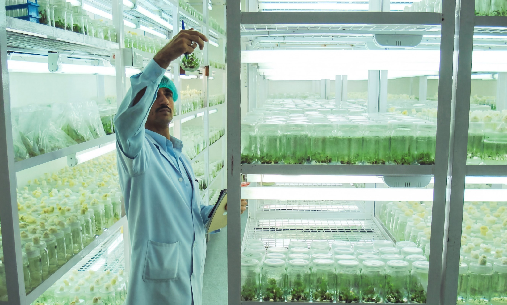
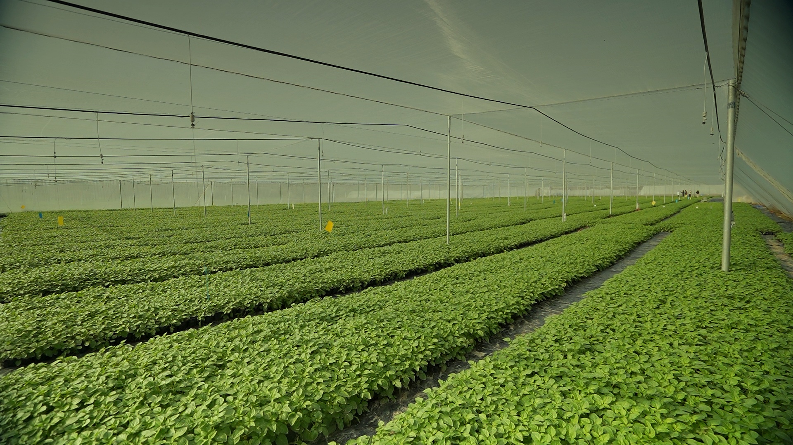
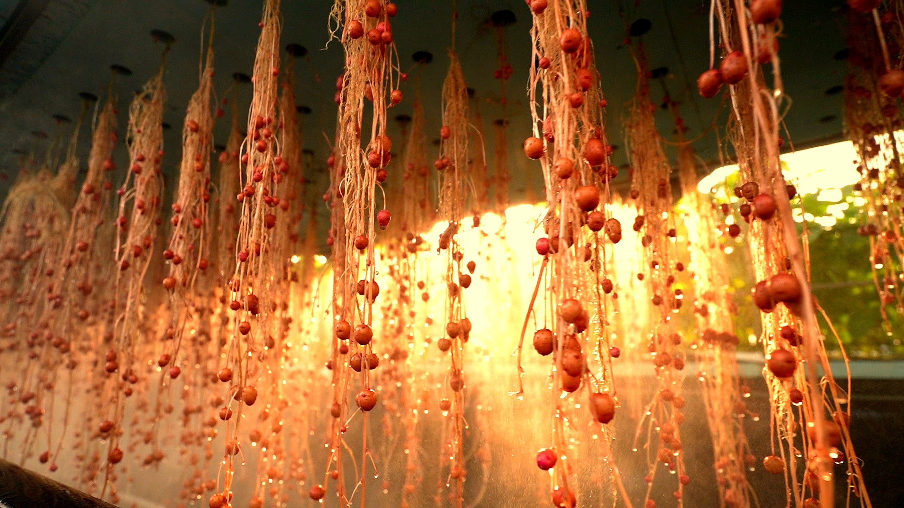

Our integrated process compresses years out of conventional seed potato multiplication — without ever compromising on disease-free, traceable quality.
Every variety begins as a single, virus-indexed mother plant selected for genetic purity. Under sterile lab conditions, a tiny explant multiplies into thousands of genetically identical, pathogen-free plantlets — the most rigorous starting point in seed potato science.


Plantlets are transplanted into coconut fibre substrate inside climate-controlled greenhouses. The natural medium provides exceptional aeration, moisture retention, and a pathogen-free root zone — a gentle bridge from sterile lab to field-scale production.

Plantlets are suspended in soilless aeroponic chambers developed with CPRI Shimla. Roots hang freely and receive a continuous fine mist of nutrient solution — accelerating mini-tuber formation at a rate impossible in conventional soil systems, with zero soil-borne disease risk.
Both production pathways converge at the same output — small, dense, disease-free G-0 mini-tubers. Each carries the full genetic profile of its parent variety, produced under conditions that guarantee zero viral, bacterial, or fungal contamination. These are the foundation of our entire seed multiplication chain.
G-0 mini-tubers are multiplied through a tightly controlled number of field generations to produce certified planting material at commercial scale. By starting from a disease-free G-0 foundation, we compress the conventional chain — delivering seed that performs consistently from the first planting, season after season.
© 2026 Sekhon Biotech Pvt. Ltd.
View our varieties →